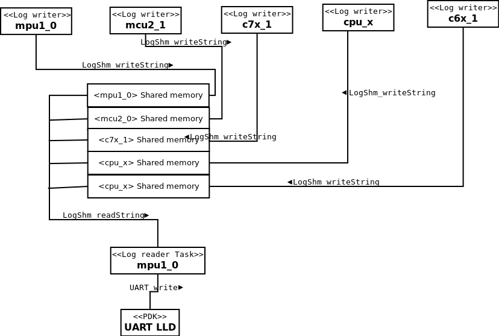

Requirements Addressed
Introduction
Purpose
This design topic describes the integration of user input and output via a command line like interface.
Short Application Description
The below features are integrated as part of console IO
- Logging via a printf API
- Here stdio printf API is redirected to a log writer API such that all prints for different CPUs get logged to a shared memory
- A log reader thread then reads these string and outputs to the console device
- Console device will be UART
- This logging infrastructure will not affect the system characteristic or real time performance as this is implemented as delayed print mechanism
- Command line interface
- Here a command line interface is provided to input read from UART
- Based on keywords entered by the user, specific pre-registered functions wil be invoked
- In, RTOS systems, this will act as a command line interface to trigger applications/demos
- In, Linux systems, standard linux command line interface will be used and this module will be disabled.
NOTE: The CLI module is not a general purpose shell and is not meant to replace one. This module allows users to invoke handlers associated with a keyword (command). Typically handlers will run some OpenVX app or they will query the system and print some useful information, ex, SoC system load, memory consumption etc.
Input and Output format
na
Directory Structure
utils/console_io/
├── include
│ ├── app_cli.h # CLI user callbable APIs
│ ├── app_log.h # Log reader/writer user callbable APIs
│ └── app_uart.h # UART IO user callbable APIs
└── src
├── app_cli.c # command line interface implementation
├── app_log_reader.c # logger implementation to read from shared memory and output to device
├── app_log_writer.c # logger implementation to write to shared memory
└── app_uart.c # UART IO implementation using UART LLD from PDK
Diagrams
Sequence Diagram
na
Component Interaction
Log reader and writer

Log reader and writer
Command line interface
Resource usage
Log reader and writer
- This module will take as input a pointer to shared memory where log writers will log their prints and log reader will from this area
- There can be only one log reader in a system
- There will one log writer per CPU in a system
- Log reader will run as low priority thread, priority configurable by user. Default will be lowest priority
- Log reader will run periodically at user configured polling interval Default will be 1ms
- In RTOS systems, stdio printf will redirect to the Log writer API
Command line interface
- No task will be created for CLI by the "console_io" module.
- User will run "appCliHandleCmd(&is_exit)" in a loop until "is_exit" returns as true
- This allows users/demos to nest calling of "app_cli_execute" to show sub-menu/commands while a demo is running
UART
- UART module will take UART instance ID as parameter from user and create the UART LLD
Error handling
Log reader and writer
- In log writer, if space is not available in shared memory to write the sring, then the caller will not block, it will drop the string and return
- In log reader, if no string is available for reading from shared memory and writing to console, log reader will sleep for user configured time and try again
Command line interface
- CLI will call handlers for registered commands, if a unknown command is encoutered, CLI will output "Unsupport command [<command name>]" to console and show the CLI prompt again
Interface
UART
Data structures
typedef struct {
uint32_t uart_instance_id;
} app_uart_init_prm_t
Functions
int32_t appUartInit(app_uart_init_prm_t *prm);
int32_t appUartDeInit();
int32_t appUartWriteString(char *str, uint32_t max_size);
int32_t appUartReadString(char *str, uint32_t max_size, uint32_t *string_size);
Log reader and writer
Data structures
#define APP_LOG_MAX_CPUS (16u)
#define APP_LOG_MAX_CPU_NAME ( 8u)
#define APP_LOG_MEM_SIZE (4*1024u)
#define APP_LOG_AREA_VALID_FLAG (0x1357231u)
typedef int (*app_log_device_send_string_f)(char *string, uint32_t max_size);
typedef struct {
uint32_t log_rd_idx;
uint32_t log_wr_idx;
uint32_t log_area_is_valid;
uint8_t log_cpu_name[APP_LOG_MAX_CPU_NAME];
uint8_t log_mem[APP_LOG_MEM_SIZE];
} app_log_cpu_shared_mem_t;
typedef struct {
app_log_cpu_shared_mem_t cpu_shared_mem[APP_LOG_MAX_CPUS]
} app_log_shared_mem_t;
typedef struct {
app_log_shared_mem_t *shared_mem;
uint32_t self_cpu_index;
uint8_t self_cpu_name[APP_LOG_MAX_CPU_NAME];
uin32_t log_rd_enable;
uint32_t log_rd_task_pri;
uint32_t log_rd_poll_interval_in_msecs;
uint32_t log_rd_max_cpus;
app_log_device_send_string_f device_write;
} app_log_init_prm_t;
Functions
void appLogInitPrmSetDefault(app_log_init_prm_t *prms);
int32_t appLogInit(app_log_init_prm_t *prms);
int32_t appLogDeInit();
int32_t appLogPrintf(char *string, ...);
Command line interface
Data structures
#define APP_CLI_MAX_PROMPT_NAME (16u)
typdef int32_t (*app_cli_cmd_handler_f)(int argc, char *argv[]);
typedef int (*app_cli_device_send_string_f)(char *string, uint32_t max_size);
typedef int (*app_cli_device_get_string_f)(char *string, uint32_t max_size, uint32_t *string_size);
typedef struct {
app_cli_device_send_string_f device_write;
app_cli_device_get_string_f device_read;
char cli_prompt_name[APP_CLI_MAX_PROMPT_NAME]
} app_cli_init_prm_t;
Functions
void appCliInitPrmSetDefault(app_cli_init_prm_t *);
int32_t appCliInit(app_cli_init_prm_t *);
int32_t appCliDeInit();
int32_t appCliRegisterSystemCmd(char *cmd, app_cli_cmd_handler_f *cmd_handler);
int32_t appCliRegisterAppCmd(char *cmd, app_cli_cmd_handler_f *cmd_handler);
int32_t appCliRegisterAppSubCmd(char *cmd, app_cli_cmd_handler_f *cmd_handler);
int32_t appCliUnRegisterAllAppSubCmds();
int32_t appCliHandleCmd(uint32_t *is_exit);
Example API calls and CLI interaction
Example init sequence
Host CPU init and main
#pragma DATA_SECTION(gAppLogSharedMem, .bss:nonCacheSharedMem)
#pragma DATA_ALIGN(gAppLogSharedMem, 1024)
app_log_shared_mem_t gAppLogSharedMem;
app_uart_init_prm_t gAppUartPrm;
app_cli_init_prm_t gAppCliPrm;
app_log_init_prm_t gAppLogPrm;
void myHostInit() {
appUartInitPrmSetDefault(&gAppUartPrm);
appCliInitPrmSetDefault(&gAppCliPrm);
appLogInitPrmSetDefault(&gAppLogPrm);
gAppUartPrm.uart_instance_id = 0;
gAppLogPrm.shared_mem = &gAppLogSharedMem;
gAppLogPrm.self_cpu_index = Ipc_mp_self();
strcpy(gAppLogPrm.self_cpu_name, Ipc_mp_getName(Ipc_mp_self()));
gAppLogPrm.log_rd_enable = 1;
gAppLogPrm.log_rd_max_cpus = Ipc_mp_getNumProcessors();
appUartInit(&gAppUartPrm);
appCliInit(&gAppCliPrm);
appLogInit(&gAppLogPrm);
}
void myHostMain() {
uint32_t is_exit = 0;
myHostInit();
while(!is_exit) {
appCliHandleCmd(&is_exit);
}
myHostExit();
}
void myHostDeInit() {
appCliDeInit();
appLogDeInit();
appUartDeInit();
}
#### Remote CPU init and main {#did_infrastructure_console_io_interface_init_remote_ex}
~~~C
#pragma DATA_SECTION(gAppLogSharedMem, .bss:nonCacheSharedMem)
#pragma DATA_ALIGN(gAppLogSharedMem, 1024)
app_log_shared_mem_t gAppLogSharedMem;
app_log_init_prm_t gAppLogPrm;
void myRemoteInit() {
appLogInitPrmSetDefault(&gAppLogPrm);
gAppLogPrm.shared_mem = &gAppLogSharedMem;
gAppLogPrm.self_cpu_index = Ipc_mp_self();
strcpy(gAppLogPrm.self_cpu_name, Ipc_mp_getName(Ipc_mp_self()));
appLogInit(&gAppLogPrm);
}
void myRemoteMain() {
myRemoteInit();
while(1);
myRemoteExit();
}
void myRemoteDeInit() {
appLogDeInit();
}
Example CLI interaction
System started, starting CLI !!!
cli:/>
cli:/> help
Supported system commands,
help - print this help
info - show device and binary information
exit - exit current application
Supported application commands,
capture_display - run capture+display app
surround_view - run surround view application
cli:/> capture_display --cfg app_capture_display.cfg
Starting appilcation "capture_display"
cli:/capture_display> help
Supported system commands,
help - print this help
info - show device and binary information
exit - exit current application
Supported application sub-commands,
pause - pause display
profile - show application profile information
cli:/capture_display> exit
Exiting appilcation "capture_display"
cli:/> xyz
Unsupported command, [xyz]
cli:/> exit
System shutdown !!!
Design Analysis and Resolution (DAR)
Design Decision : Init Sequence
Decide how to init the UART, CLI and logger modules.
Design Criteria: Init Sequence
As part of init sequence, system integrator needs to make below decisions
- which UART instance to use for IO ?
- where will the shared memory be located in the memory map ?
- which API to use to read and write strings ?
- how to run the CLI - in a spearate thread or in the main thread ?
These questions are dependant on the customer use-case, memory map, board setup. Goal is to not creep in these specific details within console_io implementation.
Design Alternative: Init sequence inside the module
- Here we have a appConsoleInit() and that does everything internally.
Advantages
- Simpler for application when all of above parameters are fixed
Disadvantages
- The implementation in console_io would become dependant on board (UART), CPU type (host or remote CPU), memory map (shared memory)
Design Alternative: Init sequence inside the application
- Here we have a init for each sub-module with all board, use-case, memory-map specific parameters taken as input.
Advantages
- Implementation independant of board, use-case, memory-map.
Disadvantages
- The app init sequence is more eloborate. A wrapper can be put at app level to make the init sequence simpler
Final Decision
Use "Init sequence inside the application" to keep console_io independant of board and use-case.
 1.8.15
1.8.15